OSM data
+ satellite imagery+ machine learning= Skynet
Anand Thakker (anand@developmentseed.org)
.
Terminator
I'm not an expert at ML (and, frankly, I'm also quite new to the OSM world)... but I think ML's really fascinating, and I think there's real promise in using it with OSM data.
- (a) Why I think ML+OSM is a good idea.
- (b) The experiments I've been working on: what I've tried, what's failed, what's worked.
- (c) How you can replicate and extend it.
Image credits: satellite / aerial imagery is from Mapbox Satellite tiles, z16 - z17
(mostly NAIP and Digital Globe)
Image credits
Why?
Answer 1:
Image classification, feature extraction, etc. are hard problems, and certain ML algorithms seem to ♥ them.
Despite 30 years of work on automatic road detection, no automatic or semi-automatic road detection system is currently on the market and no published method has been shown to work reliably on large datasets of urban imagery
Mnih and Hinton, 2010Hard problem
From my admittedly amateur research, I haven't found reason to believe that this has changed much in the past 5-6 years.
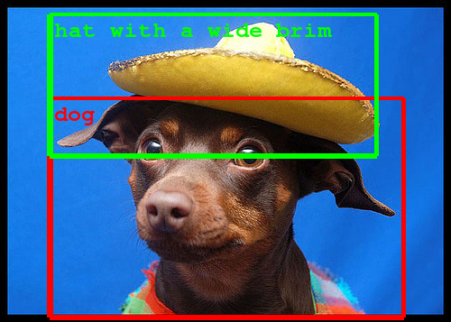
ML hearts CV:
Machine learning is an incredibly broad field, but computer vision is one area where it really shines, and where its recent advances have been both mind-boggling and totally mundane.
Mundane: things like face detection/recognition, voice recognition on smartphones
Mind-boggling: style transfer
Answer 2:
OSM + satellite imagery is a great fit for machine learning.
To say why, I'll give a quick explanation of what ML is for those unfamiliar with it.
Machine Learning ('Supervised' Learning)
Model: takes an input, 'predicts' the output
Training data: inputs + 'true' / 'expected' outputs
.
I'm going to focus here on one major branch of ML, called "supervised learning." For a really nice, broader intro, I recommend checking out Stuart Lynn's talk from this year's FOSS4G-NA, "Machine Learning with Geospatial Data" -- it's on YouTube.
Ok, here's the idea with supervised learning. You have a *model*, which is basically a function that takes inputs and produces outputs. There are many, many different kinds of models: neural networks, random forests, support vector machines; but, especially for those of us who are not ML researchers, these models are often pretty much black boxes.
You also have some *training data*. This is a set of inputs for which you already know the correct or desired output. E.g.:
- flickr images and their categories
- audio clips and their text transcriptions
- photographs and the locations of human faces
Training a Model
Apply model to inputs
Compare model's prediction to ground truth
Tweak the model based on error
Repeat (a lot)
Once you have those, the big picture idea for ML training is really very simple: you take your model, which starts out completely wrong and random. You apply it to the inputs in your training data to get its "predicted" output, and then compare that to the "known" / "expected" / "ground truth" outputs. Based on the error, tweak the model's parameters to make it better -- e.g., if the outputs were too big, tweak the model to produce smaller numbers. Now repeat... a LOT.
Now, the details -- especially in calculating error and then tweaking model parameters -- that is some subtle stuff which depends quite a bit on the inner workings of the models you're using; but, fortunately, that complexity is mostly taken care of by ML tools and libraries.
Anyway, the real magic here is that if things go well, then after you've trained the model, it will *generalize* beyond the training data, producing (mostly) correct answers for inputs that *weren't* in your training data.
Answer 2: imagery (input)+ OSM (ground truth)= amazing training data
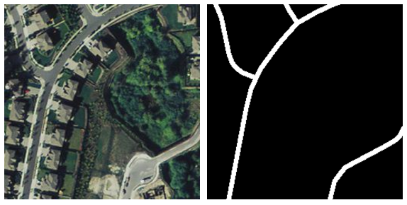
In general, one of the biggest challenges in machine learning is getting good training data, and this is what I mean about imagery + OSM being a great fit for machine learning: it represents an amazing source of training data.
Answer 3: Improving and complementing OSM
Automatically prioritize tracing work
Maybe even initialize it?
Suggest tags for existing features
Okay, so that's the why. Now before I dive into the experiments I've been working on, I just want to mention some similar work that others have been doing.
DeepOSM
(deeposm.org)
Work by Andrew Johnson; uses a neural network to detect OSM errors
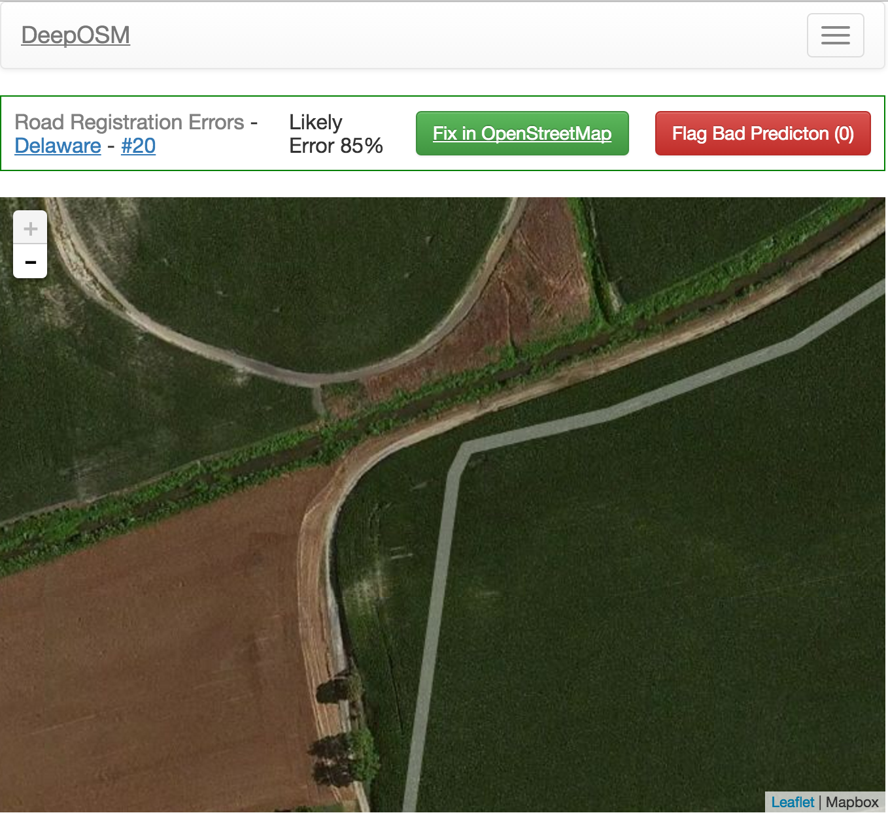
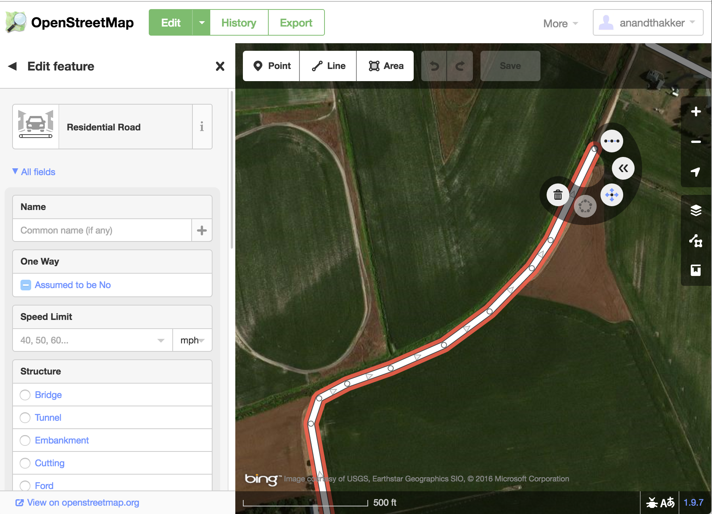
Terrapattern
(terrapattern.com)
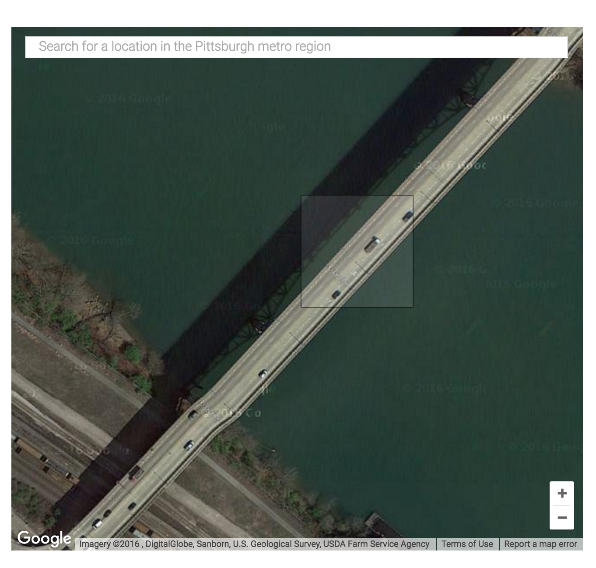
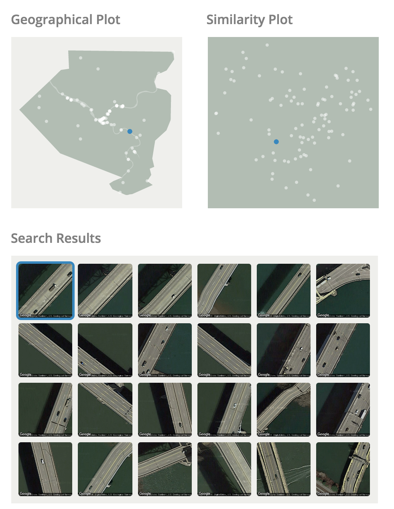
Skynet Experiments
Big goal is automatic feature extraction, and, in particular, extracting road geometries from satellite imagery.
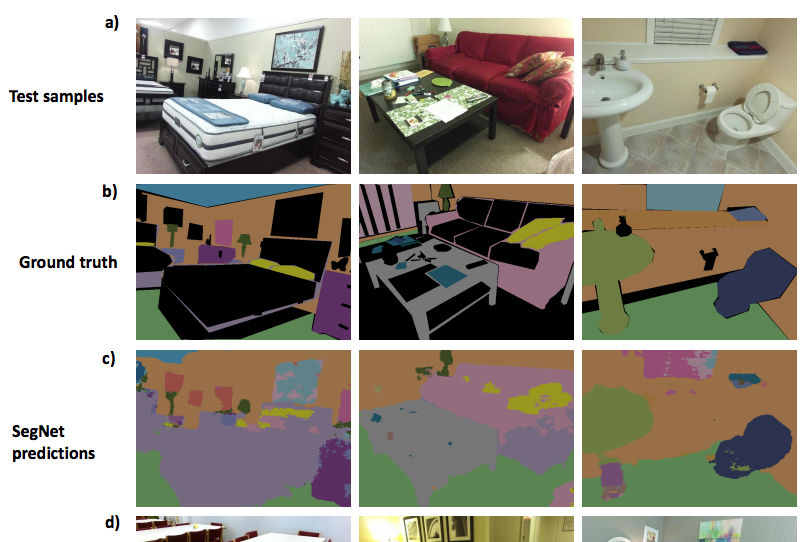
My experiments so far have all been based on a particular neural network model called SegNet.
- "semantic segmentation" = essentially carving up an image into distinct, categorized pieces
- Late 2015, by researchers at University of Cambridge
- Based on the "VGG-16" network, which was also one of the ImageNet winners in 2014
- 26 or 89 layers, depending on how you count (26 "convolution" layers)
- "State of the art" image segmentation results
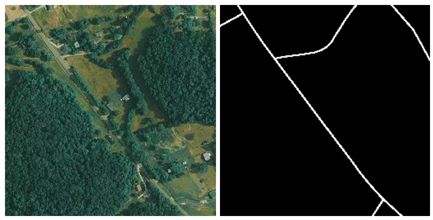
Here's what the training data looks like. Left is the input image; right is the "ground truth" rendered from OSM.
But, this is also an example of one of my first mistakes: I rendered the roads here at a width of 1 pixel; when I used this for training, I found that the network just couldn't learn from it.
[{
"name": "Road",
"color": "#ffffff",
"stroke-width": "1""5",
"filter": "[highway].match('.+') and not
([tunnel] = 'yes' or [tunnel]='true')"
}, {
"name": "Building",
"color": "#ff0000",
"filter": "[building].match('.+')"
}]
But this is pretty easy to fix with the skynet-data scripts. They use a small JSON description for each different "class" that we want the network to identify; all I had to do was bump the stroke width from 1 to 5 and re-render. You can also see here how the filter that's being used to pull out the right features for each category.
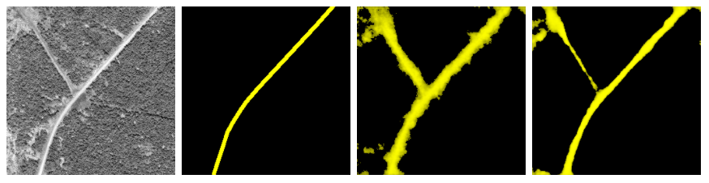
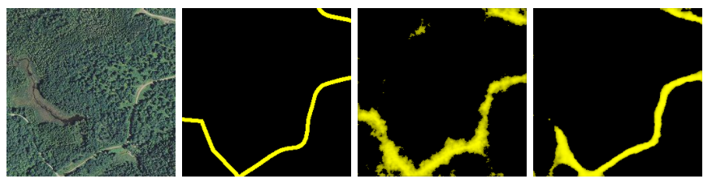
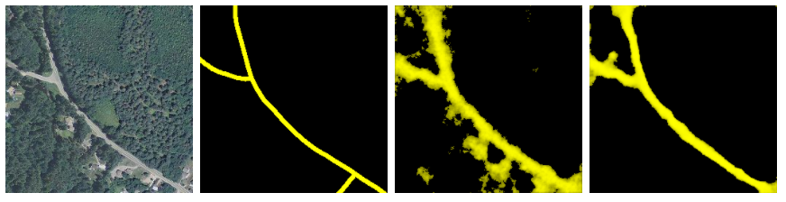
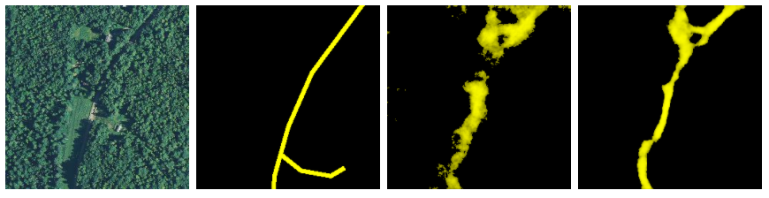
Once we did this, we got our first interesting results.
Training set was 4000 z16 tiles, randomly sampled from the continental US.
Note: this image (and all the ones I'll show), is actually from a smaller _TEST_ set that was specifically NOT used in training. This is important: whenever testing how the model performs, we never use images that were part of the training, because we don't just want to see if the model "memorized" those answers.
So, here are some examples of how our model performed after just a few hours of training:
Not... terrible... but not that great either. The predictions are quite fuzzy. Also, it's not shown here, but the model also gets really easily confused by shadows at this point.
But if we keep iterating for a whole day or two...
The model really starts to sharpen up as it gets older!
I started getting pretty excited at these results, but one limitation here is that most of the tiles in this training and testing dataset have pretty low road density. And, indeed, if we look at how this model performs in a more urban environment...
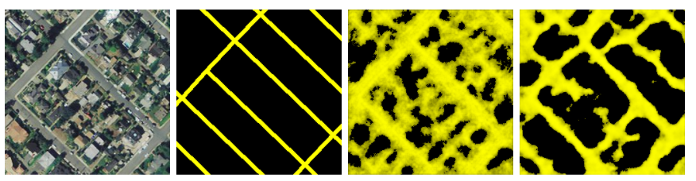
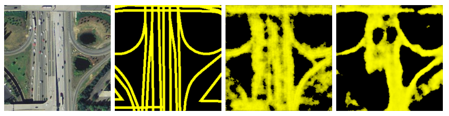
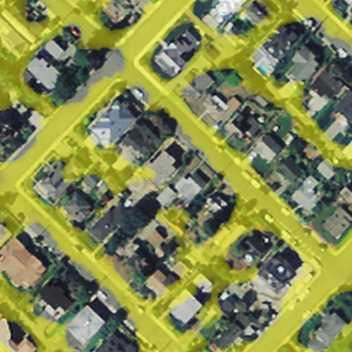
We're back to really fuzzy, indistinct predictions, even from the "older", more trained model. So, early last week, I put together a set of training data using tiles only from Seattle and started training a model that, hopefully, would do better at detecting streets in cases like this.
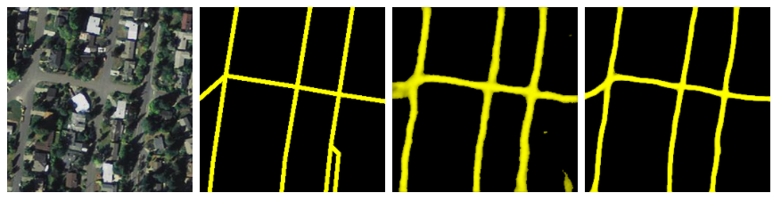
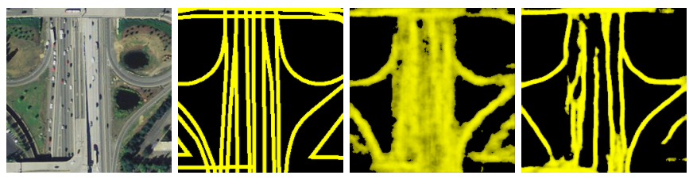
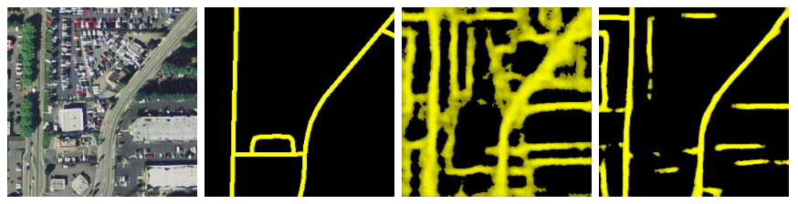
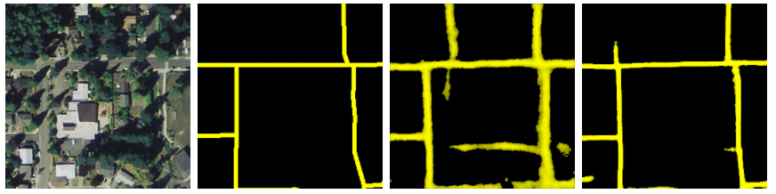
.
- 6700 training images
- z17 instead of z16 -- that's closer to 1m resolution rather than 2m
Here's how the model did.
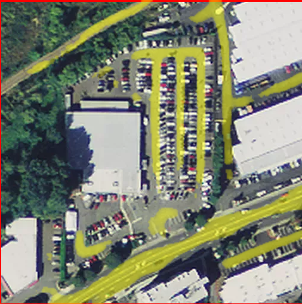
One common point of failure that I noticed here was that parking lots like this one tend to confuse the model. I think that retraining with a separate label for parking lots might be very helpful, but I haven't investigated whether we've got good, tagged polygons for parking lots in OSM.
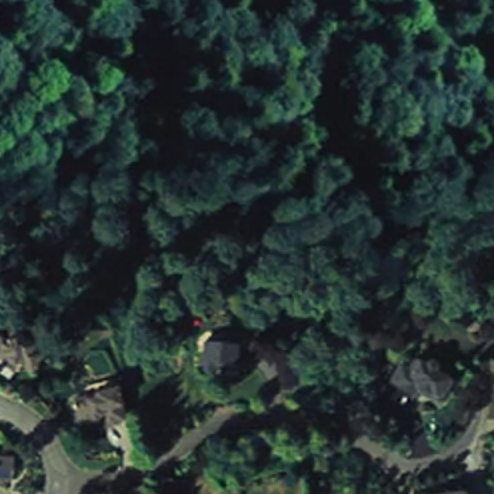
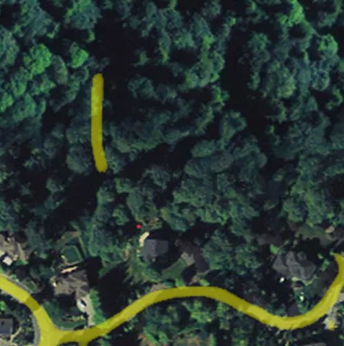
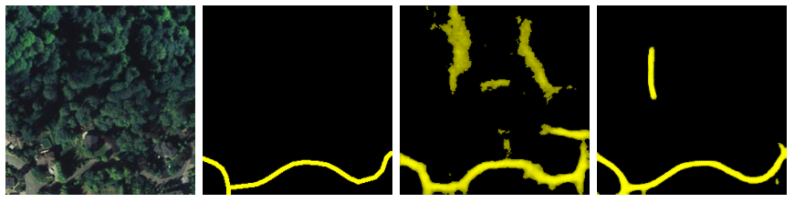
On the other hand, the model seems to handle visual breaks in the road quite well; for example, you can see here that even though trees' shadows are falling across the road, the model still produces a nice, smooth line.
There's also that false positive up there -- and there are definitely plenty of these that hurt the model's accuracy. But there are _also_ cases like this one...
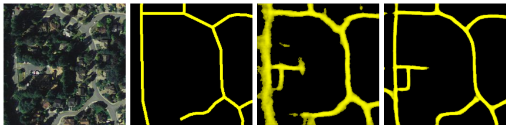
...where the model finds roads that are not in OSM, and gets a worse accuracy score for it. This is one of the challenges of using OSM data for ground truth: it's quite hard to assess accuracy.